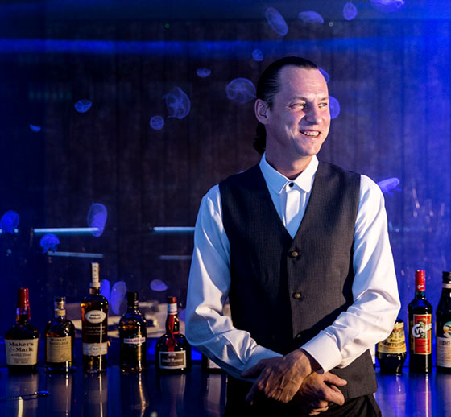
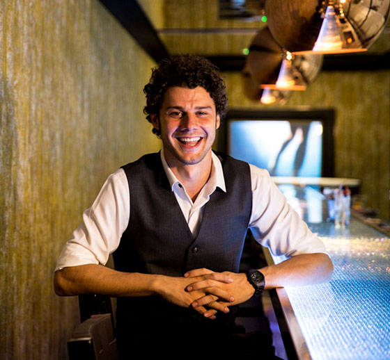

Once Deputy Executive Chef at Club Chinois; a restaurant widely recognised as the pioneer of modern Chinese fine dining cuisine in Singapore, Nicky built his repertoire with various notable international five star hotels regionally and internationally, before successfully landing the role of Executive Chef de Cuisine in 2011 at the Michelin starred dining establishment, Hakkasan New York City.

Bar Manager
Jacek Piasecki
Jacek has plied his trade since 1989 and is one who excels in working with new and complex flavours, with a penchant for frozen concoctions. With 25 years of experience, Jacek has overseen numerous talent, leading teams of bartenders in several cities across Europe and Asia. Also a chef by training, Jacek schooled at the prestigious Helsinki Culinary School Perho, working his way up before finally making his mark in 1999 as head bartender and CEO of Bar Slingin, - a bar which has been rated top 10 in Helsinki every year since 2000.

Assistant Bar Manager
Marco Pignotta
Possessing an excellent capacity for mixing great cocktails on the fly whilst maintaining good conversation, Assistant Bar Manager, Marco Pignotta is absolutely capable of delighting your tastebuds with his well-balanced and thoughtful concoctions. This Italian bartender's philosophy when it comes to concocting delicious cocktails is to use the freshest ingredients and to focus on simplicity. He prefers it when the process of putting together a cocktail is organic.